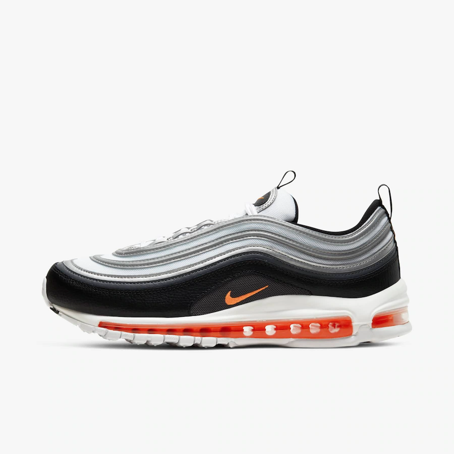

TOP 5 TENIS MAIS BONITOS
NIKE TN
Em 1997, a Nike estava trabalhando em um projeto chamado Sky Air em parceria com sua principal vendedora, a rede de lojas a Foot Locker. A ideia era criar um novo tênis de corrida que incluísse a tecnologia Tuned Air, então a mais recente inovação da família Air Max. A nova sola, “tunada”, era dividida em partes (assim como a bolha de ar) para otimizar a estabilidade do corredor e reduzir a pressão no calcanhar. Só que as primeiras 15 propostas que a Nike apresentou à loja foram rejeitadas. É aí que entra Sean McDowell. Hoje, McDowell é considerado um dos maiores designers da história da Nike. Ele foi diretor de criação de toda a linha olímpica de 2008, supervisionou a divisão de corrida da marca durante a era Free Run e a era Lunar e recentemente assumiu o comando da Converse, subsidiária da Nike. Em 1997, contudo, ele era só um designer iniciante convidado a projetar um modelo que satisfizesse a Foot Locker. Quando ouviu o nome do projeto, McDowell lembrou de alguns desenhos que fez durante umas férias na Flórida enquanto admirava o pôr do sol. O céu tingido em tons de azul, cortado pelas pelas silhuetas negras das palmeiras entortadas pelo vento. Já viu isso em algum lugar, certo? Essa memória originou a criação do Nike Air Max Plus.

NIKE 97
2017 é um ano repleto de comemorações importantes para a Nike, tivemos 30 anos de Air Max, 45 anos de Cortez e temos também 20 anos de Air Max 97. Apesar do Air Max 97 ter sido vendido no Brasil há alguns anos atrás, algumas versões eram com materiais mais recentes, como a versão "Tape" ou a "Hyperfuse" por exemplo, o que desanimava um pouco quem queria algo mais fiel ao da época. A boa notícia é que agora em 2017, comemorando 20 anos de existência, o tênis volta com tudo para o Brasil nas suas cores mais tradicionais, a "Silver Bullet" e a "Metallic Gold". Muitos sabem que o Air Max 97 foi inspirado pelo trem bala do Japão, mas o que poucos sabem, é que na verdade a maior inspiração para esse tênis veio de uma gota d'água caindo em uma lagoa. No momento em que a gota toca a lagoa, ela forma uma ondulação ao seu redor, é essa ondulação que é representada pelos traços laterais que começam de um lado, passam pelo toebox e seguem para o outro lado. Inclusive, é por isso que o swoosh na língua fica dentro de uma "gota".



NIKE VAPOR MAX
Fabricar um modelo que una estabilidade, durabilidade, amortecimento e a sensação real de estar andando no "Air". Essa foi a missão para criar o VaporMax, afirmou a Kathy Gomez, uma das responsáveis por inovação em amortecimento da marca. O lançamento principal do Air Max Day desse ano é um tênis de corrida. Pra quem não sabe, o Air Max é um modelo criado para o running e, que com o passar dos anos e da tecnologia, se transformou em um modelo casual por não apresentar todas as características necessárias para ser usado em performance. Ainda assim, alguns modelos da família Air Max eram lançados, até o ano passado, voltados para o esporte, gerando uma leve confusão sobre sua real funcionalidade. Foi por isso que o VaporMax foi criado, para fazer a sua revolução e trazer essa família e tecnologia de volta para a corrida. Depois de 15 tentativas de construir um solado todo com as unidades de ar, o VaporMax vem com toda atitude que o Air Max carrega desde seu primeiro lançamento e traz a sua tão famosa "tecnologia visível" em toda sua extensão para maior conforto no universo da corrida.
MIZUNO PRO 6
O Prophecy NOVA teve criação inspirada na origem das estrelas, fenômeno chamado de Supernova e conhecido por gerar grandes efeitos luminosos. A Mizuno apresenta no calçado um cabedal extremamente moderno, com refletivos iridescentes que rementem aos raios de luz ultra coloridos
JORDAN TRAVIS SCOTT
Travis possui suas próprias versões de vários dos sneakers mais icônicos na história da marca: O Air Force 1, Jordan 1, Jordan 4, Jordan 6, e agora o Dunk. Estes são modelos de muito sucesso, que seriam desejados sendo ou não criações de Scott, por já possuírem histórias bem consolidadas. Enquanto algumas pessoas podem achar que seus toques são sutis demais, como por exemplo no Jordan 1, outros enxergam um colaborador que respeita um sneaker clássico. O design é muito bem executado, sem sobrecarregar o estilo e sem perder as principais características originais.